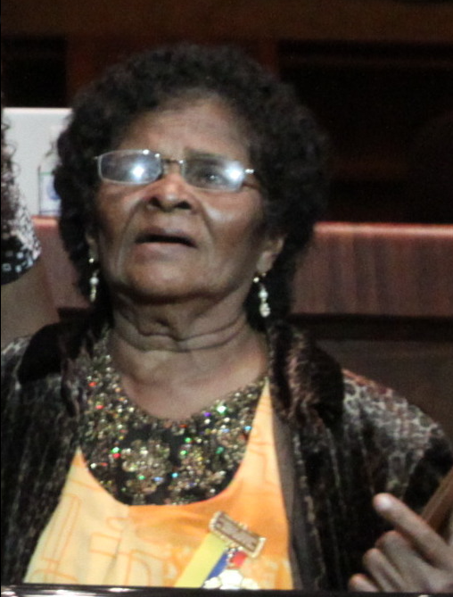

Petita Palma Piñeiros (Carondelet, San Lorenzo, 4 de marzo de 1927) es una cantante y gestora cultural ecuatoriana de música esmeraldeña y el folclor afro, considerada como una de las propulsoras de la marimba y la música afroesmeraldeña ancestral.1 Ha dado un reconocimiento a la cultura negra en el ámbito internacional, sus tradiciones son ejemplo para otras organizaciones folklóricas propias de la casa de Palma, donde se guardan antiguas fotos acerca del inicio de la marimba en la ciudad.
Nació en la provincia de Esmeraldas, por esta razón vivió rodeada de la naturaleza y el campo.4 Su madre, Tomasa Piñeiros, fue cantante y su padre, Juan Gregorio Palma, tocaba y conocía de la marimba esmeraldeña. Creció junto a las historias de sus abuelos afrodescendientes, por lo que decidió preservar sus raíces y tradiciones convirtiéndose en “La negra Marimbera”. La cantante se crio en la parroquia rural de Borbón del cantón Eloy Alfaro junto a sus abuelos y padres dentro de un entorno humilde y modesto. Uno de sus abuelos quien poseía raíces colombianas se dedicaba a la fabricación de marimbas y a la composición de música propia. El abuelo de Petita se convirtió en una fuente de inspiración, pues al vivir día a día junto a él aprendió y conoció acerca de su cultura y raíces. Nunca se sintió avergonzada de pertenecer a la raza negra y con el tiempo desarrolló habilidades para tocar instrumentos musicales artesanales como la marimba, el bombo, el cununo y el guasá. A lo largo de su vida, Petita se ha desenvuelto en un entorno de bajos recursos económicos,sin embargo, cuando empezó a cantar no pensó en esta actividad como un negocio con fines de lucro. Se dedicaba a cantar en las Palmas con su grupo musical y sus hijos para los turistas mientras caminaban largas horas a lo largo de las playas ecuatorianas. Aprendió sobre la poesía popular de Esmeraldas para con ello, realizar viajes por pueblos remotos en donde tuvo vivencias cotidianas con la gente de la región con el fin de nutrirse de versos, narraciones, saberes acerca de instrumentos y bailes en donde pueda expresar emociones y sentimientos. El amor a los ancestros, la tierra, el arte la convirtió en una especialista, una investigadora del más alto nivel a pesar de no haber recibido títulos en escuelas formales. Tuvo 7 hijos, de los cuales su música sigue vigente en Alberto que a lo largo del tiempo se ha convertido en uno de los maestros de marimba más destacados de Esmeraldas por su entrega al mismo instrumento a partir de los 14 años y su hija Anita quién incursiona también en la música.
Petita Palma es una de las precursoras dentro de la marimba, un tipo de música propia de la cultura afroecuatoriana del cantón San Lorenzo en la provincia de Esmeraldas, Ecuador. 7 Sus primeras melodías fueron de la mano junto con 3 guitarristas, haciendo música con las manos, su voz, palos e incluso piedras. Su primer canto fue “El Bambuco”, acompañado de una danza, este género musical tiene una historia por contar. Sus canciones representan a las leyedas y tradiciones de su cultura. “Andarele” es su canción más famosa por la que se dio a conocer a un nivel internacional. El "Andarele" es otra de sus obras conocidas, con bailes ancestrales propios de la cultura afroecuatoriana.9 Esta canción narra una leyenda de la parroquia de Montalvo en Ecuador. La gente al escucharla perdía la noción del tiempo ya que solo quería pasar bailando toda la noche, por lo que uno de los músicos dijo “esto se volvió un andarele” y de allí provino su nombre. La palabra andarele se repitió tantas veces hasta convertirse en una canción Andarele es un término propio de la provincia de Esmeraldas, a pesar de que esta palabra no consta en ningún diccionario de la lengua española, su significado es “vámonos”. En 1969, Petita Palma creó la primera escuela de marimba donde enseñaba a jóvenes y adultos a cómo crear música tradicional esmeraldeña resaltando características propias de su cultura, y de esta manera compartirlas con el mundo. La Tunda, El Riviel, La Gualgura y El Duende son relatos de la cultura afroecuatoriana que han sido transformados en canciones con el fin de transmitir la historia y la cultura de los pueblos esmeraldeños. 12 Canciones que son interpretadas mediante el uso de pedazos de palos, piedras, guitarras, bombos, cununos, maracas, las palmas de las manos y su tarareo. Instrumentos que son característicos de la cultura afroecuatoriana.